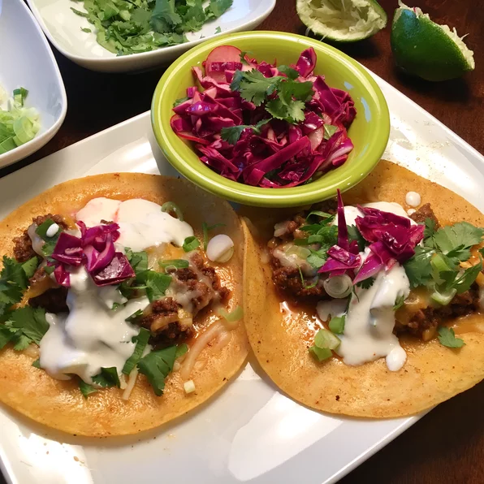

Easy Chorizo Street Tacos

Description
These street tacos are delicious and, as the name implies, easy. Great for parties, events, or just a Tuesday night on the couch.
Ingredients
- i chorizo sausage link, casing removed and meat crumbled
- 2 tablespoons chipotle peppers in adobo sauce
- 4 corn tortillas
- 2 tablespoons chopped onion
- 2 tablespoons chopped fresh cilantro (optional)
Steps
- Mix chorizo and chipotle peppers in adobo sauce together in a bowl.
- Heat a skillet over medium-high heat; add chorizo mixture and cook until crisp, 5 to 7 minutes. Transfer chorizo to a plate, reserving grease in the skillet.
- Heat tortillas in the reserved grease in skillet over medium heat until warmed, 1 to 2 minutes per side. Stack 2 tortillas on top of each other for each taco. Fill with chorizo, onion, and cilantro.